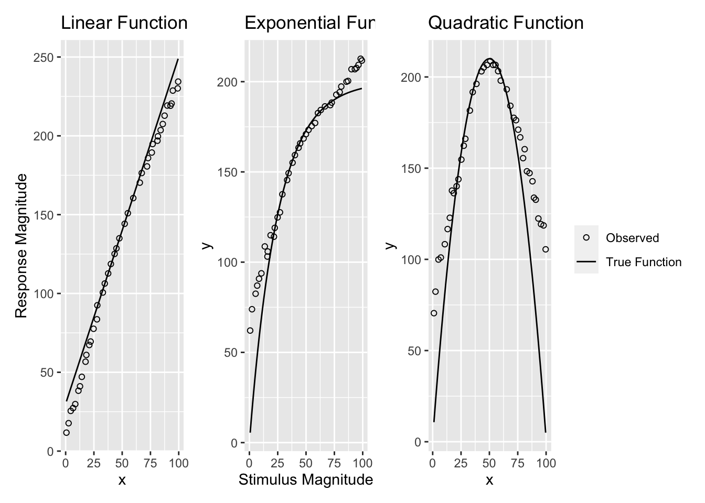

Simulating DeLosh 1997
Simulation
ALM
EXAM
R
Code
#https://nrennie.rbind.io/blog/2022-06-06-creating-flowcharts-with-ggplot2/
inNodes <- seq(1,6,1) %>% as.integer()
outNodes <- seq(300,1000,50)%>% as.integer()
stim <- "Stim"
resp <- "Response"
inFlow <- tibble(expand.grid(from=stim,to=inNodes)) %>% mutate_all(as.character)
outFlow <- tibble(expand.grid(from=outNodes,to=resp)) %>% mutate_all(as.character)
gd <- tibble(expand.grid(from=inNodes,to=outNodes)) %>% mutate_all(as.character) %>%
rbind(inFlow,.) %>% rbind(.,outFlow)
g = graph_from_data_frame(gd,directed=TRUE)
coords2=layout_as_tree(g)
colnames(coords2)=c("y","x")
odf <- as_tibble(coords2) %>%
mutate(label=vertex_attr(g,"name"),
type=c("stim",rep("Input",length(inNodes)),rep("Output",length(outNodes)),"Resp"),
x=x*-1) %>%
mutate(y=ifelse(type=="Resp",0,y),xmin=x-.05,xmax=x+.05,ymin=y-.35,ymax=y+.35)
plot_edges = gd %>% mutate(id=row_number()) %>%
pivot_longer(cols=c("from","to"),names_to="s_e",values_to=("label")) %>%
mutate(label=as.character(label)) %>%
group_by(id) %>%
mutate(weight=sqrt(rnorm(1,mean=0,sd=10)^2)/10) %>%
left_join(odf,by="label") %>%
mutate(xmin=xmin+.02,xmax=xmax-.02)
ggplot() + geom_rect(data = odf,
mapping = aes(xmin = xmin, ymin = ymin,
xmax = xmax, ymax = ymax,
fill = type, colour = type),alpha = 0.5) +
geom_text(data=odf,aes(x=x,y=y,label=label,size=3)) +
geom_path(data=plot_edges,mapping=aes(x=x,y=y,group=id,alpha=weight)) +
# geom_rect(aes(xmin=-1.05,xmax=-.95,ymin=-10,ymax=5),color="red",alpha=.1)+
# geom_rect(aes(xmin=-0.05,xmax=.05,ymin=-10,ymax=5),color="blue",alpha=.1) +
theme_void()
ALM Definition
Input Activation
\[ a_i(X)=\exp \left|-\gamma \cdot\left[X-X_i\right]^2\right| \]
Output activation
\[ o_j(X)=\Sigma_{i=1, M} w_{j i} \cdot a_i(X) \]
Output Probability
\[ P\left[Y_j \mid X\right]=o_j(X) / \Sigma_{k=1, L} o_k(X) \]
Mean Response
\[ m(X)=\Sigma_{j=1, L} Y_j \cdot P\left[Y_j \mid X\right] \]
Generate Response
Toggle Code
alm.response <- function(input=1,c) {
input.activation <- exp(-c*(input.layer - input)^2)
input.activation <<- input.activation/sum(input.activation)
#print(length(input.activation)); print(dim(weight.mat))
output.activation <<- weight.mat %*% input.activation
output.probability <<- output.activation/sum(output.activation)
mean.response <<- sum(output.layer * output.probability)
mean.response
}
Update Weights Based on Feedback
Toggle Code
alm.update <- function(corResp,c,lr){
fz <- exp(-c*(output.layer - corResp)^2)
teacherSignal <- (fz - output.activation)*lr
#print(length(teacherSignal)); print(length(fz))
wChange <- teacherSignal %*% t(input.activation)
weight.mat <<- weight.mat + (wChange)
weight.mat[weight.mat<0]=0 # prevent negative values
# weight.mat[weight.mat>1]=1
weight.mat <<- weight.mat
}
alm.trial <- function(input, corResp,c,lr){
alm.response(input,c)
alm.update(corResp,c,lr)
# print(paste0("input=",input,"; corResp=",corResp,"; mean.response=",mean.response))
mean.response
}Feedback Signal
\[ f_j(Z)=e^{-c\cdot(Z-Y_j)^2} \]
Weight Updates
\[ w_{ji}(t+1)=w_{ji}(t)+\alpha \cdot {f_i(Z(t))-O_j(X(t))} \cdot a_i(X(t)) \]
Exam Generalization
Toggle Code
exam.response <- function(input,c){
# Find the index of the input node with the highest activation
trainVec = sort(unique(xt))
nearestTrain <- trainVec[which.min(abs(input - trainVec))]
aresp <- alm.response(nearestTrain,c)
#max.index <- which.max(input.activation)
xUnder = ifelse(min(trainVec) == nearestTrain, nearestTrain, trainVec[which(trainVec == nearestTrain) - 1])
xOver = ifelse(max(trainVec) == nearestTrain, nearestTrain, trainVec[which(trainVec == nearestTrain) + 1])
mUnder <- alm.response(xUnder,c)
mOver <- alm.response(xOver,c)
exam.output = round(aresp + ((mOver - mUnder) / (xOver - xUnder)) * (input - nearestTrain), 3)
# Determine the input nodes and associated weights for computing the slope
exam.output
}Input node actvation
\[ P[X_i|X] = \frac{a_i(X)}{\\sum_{k=1}^Ma_k(X)} \]
Slope Computation
\[ E[Y|X_i]=m(X_i) + \bigg[\frac{m(X_{i+1})-m(X_{i-1})}{X_{i+1} - X_{i-1}} \bigg]\cdot[X-X_i] \]
Prepare Simulation Data
Toggle Code
# function to generate data, from either linear, exponential, quadratic or sinusoidal functions
generate.data <- function(x, type = "linear", noise = NA) {
if (type == "linear") {
y <- round(2.2*x + 30,0)
}
else if (type == "exponential") {
y <- round(200*(1-exp(-x/25)),0)
}
else if (type == "sinusoidal") {
y <- sin(2 * pi * x)
}
else if (type == "quadratic") {
y <- round(210 - ((x-50)^2)/12,0)
}
else {
stop("type must be linear, exponential, quadratic, or sinusoidal")
}
# if noise is specified, add noise to the y values
if(!is.na(noise)) {
y <- y + round(rnorm(length(y), 0, noise),2)
}
data.frame(x, y,type)
}
envTypes <- c("linear", "exponential", "quadratic")
lowDensityTrainBlock <- c(30.5, 36.0, 41.0, 46.5, 53.5, 59.0, 64.0, 69.5)
medDensityTrainBlock <- c(
30.0, 31.5, 33.0, 34.5, 36.5, 38.5, 41.0, 43.5, 46.0,
48.5, 51.5, 54.0, 56.5, 59.0, 61.5, 63.5, 65.5, 67.0, 68.5, 70.0
)
highDensityTrainBlock <- c(
30.0, 30.5, 31.0, 32.0, 33.0, 33.5, 34.5, 35.5,
36.5, 37.0, 38.0, 38.5, 39.5, 40.5, 41.5, 42.0, 43.0,
43.5, 44.5, 45.5, 46.5, 47.0, 48.0, 48.5, 49.0, 51.0, 51.5, 52.0,
53.0, 53.5, 54.5, 55.5, 56.5, 57.0, 58.0, 58.5, 59.5, 60.5, 61.5,
62.0, 63.0,63.5, 64.5, 65.5, 66.5, 67.0, 68.0, 69.0, 69.5, 70.0
)
# all density conditions have the same # of training trials, but differ in the # of repetitions per items, or blocks, low density has 25 training blocks, medium has 10 blocks, high has 4 blocks.
# generate training data, for each combination of environment type and density. Use purrr map functions. Rep each dataset by its number of blocks.
lowTrain <- map_dfr(envTypes, ~ generate.data(rep(lowDensityTrainBlock,25), type = .x)) %>% group_by(type) %>% mutate(block = rep(1:25, each = 8),trial=seq(1,200))
medTrain <- map_dfr(envTypes, ~ generate.data(rep(medDensityTrainBlock,10), type = .x)) %>% group_by(type) %>% mutate(block = rep(1:10, each = 20),trial=seq(1,200))
highTrain <- map_dfr(envTypes, ~ generate.data(rep(highDensityTrainBlock,4), type = .x)) %>% group_by(type) %>% mutate(block = rep(1:4, each = 50),trial=seq(1,200))
# nTrainExamples <- 10
# trainLowBound <-20; trainHIghBound <- 80
# nBlock <- 5 # number of times each training example is presented
# sample training data from function, nTrainExamples., between trainLowBound and trainHIghBound
# xt <- runif(nTrainExamples, trainLowBound, trainHIghBound)
# trainVec <- rep(xt, nBlock)Simulation Functions
Code
# simulation function
alm.sim <- function(dat, c, lr,testRange=seq(0,100,.5)){
input.layer <<- matrix(seq(0,100,.5) ) # half step units for inputs, from 0 to 100
output.layer <<- matrix(seq(0,250,1)) # single step units for outputs, from 0 to 250
weight.mat <<- matrix(0.0000000,nrow=length(output.layer),ncol=length(input.layer )) # weights initialized to 0 (as in Delosh 1997)
xt<<-dat$x
# run training
st <- map2_dbl(dat$x, dat$y, ~alm.trial(.x,.y,c,lr))
# append training data to the data frame
dat <- dat %>% mutate(almResp = st)
return(list(d=dat,wm=weight.mat,c=c,lr=lr)) # final weightmat is probs incorrect for all but last
}
simOrganize <- function(simOut){
dat <- simOut$d
weight.mat <<- simOut$wm
c <- simOut$c
lr <- simOut$lr
trainX <- unique(dat$x)
xt <<- trainX
almResp <- generate.data(seq(0,100,.5), type = first(dat$type)) %>% rowwise() %>%
mutate(model="ALM",resp = alm.response(x,c))
examResp <- generate.data(seq(0,100,.5), type = first(dat$type)) %>% rowwise() %>%
mutate(model="EXAM",resp = exam.response(x,c))
bind_rows(almResp,examResp) %>%
mutate(type=first(dat$type),
c=c,lr=lr,
type=factor(type,levels=c("linear","exponential","quadratic"))) %>%
# compute test_region, equal to "train" if x is within trainX, interpolate if within trainX range, else "extrapolate"
mutate(test_region = ifelse(x %in% trainX, "train", ifelse(x > min(trainX) & x < max(trainX), "interpolate", "extrapolate")))
}Simulate Training:
Code
# split by type, then send each training dataset to simulation function
lowSim <- map(envTypes, ~ alm.sim(lowTrain %>% filter(type == .x), c = 1.4, lr = .4))
medSim <- map(envTypes, ~ alm.sim(medTrain %>% filter(type == .x), c = 1.4, lr = .4))
highSim <- map(envTypes, ~ alm.sim(highTrain %>% filter(type == .x), c = 1.4, lr = .4))
simAll <- rbind(bind_rows(lowSim %>% map("d")) %>% mutate(density = "low"),
bind_rows(medSim %>% map("d")) %>% mutate(density = "med"),
bind_rows(highSim %>% map("d")) %>% mutate(density = "high"))
simAll <- simAll %>% mutate(stage=as.numeric(cut(trial,breaks=20,labels=seq(1,20))),
dev=sqrt((y-almResp)^2),
#reorder density factor levels
density=factor(density,levels=c("low","med","high")),
type=factor(type,levels=c("linear","exponential","quadratic"))) %>%
dplyr::relocate(density,type,stage)
simAll %>% ggplot(aes(x=block,y=dev,color=type)) + stat_summary(geom="line",fun=mean,alpha=.4)+
stat_summary(geom="point",fun=mean,alpha=.4)+
stat_summary(geom="errorbar",fun.data=mean_cl_normal,alpha=.4)+facet_wrap(~density, scales="free_x")
Predictions for Generalization
Code
lowSimTest <- map_dfr(lowSim,simOrganize) %>% mutate(density = "low")
medSimTest <- map_dfr(medSim,simOrganize) %>% mutate(density = "med")
highSimTest <- map_dfr(highSim,simOrganize) %>% mutate(density = "high")
simTestAll <- rbind(lowSimTest,medSimTest,highSimTest) %>% group_by(type,density,model) %>%
mutate(type=factor(type,levels=c("linear","exponential","quadratic")),
density=factor(density,levels=c("low","med","high"))) %>%
dplyr::relocate(density,type,test_region)
simTestAll %>% ggplot(aes(x=x,y=y)) +
geom_point(aes(x=x,y=resp,shape=model,color=model),alpha=.7,size=1) +
geom_line(aes(x=x,y=y),alpha=.4)+
#geom_point(aes(x=x,y=y,color=test_region),alpha=.2)+
geom_point(data=simTestAll %>% filter(test_region=="train"),aes(x=x,y=y),color="black",size=1,alpha=1) +
# geom_point(data=simTestAll %>% filter(test_region %in% c("interpolate","extrapolate")),aes(x=x,y=y,color=test_region),alpha=.6) +
# geom_point(data=simTestAll %>% filter(test_region=="extrapolate"),aes(x=x,y=y),color="purple",alpha=.3) +
facet_grid(density~type) +
theme_bw() + theme(legend.position="bottom")
Code
#lowSimTest %>% filter(model=="EXAM" & type=="linear")
#rm(list= ls()[sapply(ls(), function(x) class(get(x))) != 'function'])
#rm(weight.mat,input.activation,output.probability,output.activation,mean.response,xt)
#
# simAll %>% ggplot(aes(x=block,y=dev)) + stat_summary(geom="line",fun=mean,alpha=.3)+stat_summary(geom="point",fun=mean)+
# stat_summary(geom="errorbar",fun.data=mean_cl_normal)+facet_wrap(density~type, scales="free_x")Collpasing Across Density Levels gives us:
Master Function for full simulation
Code
# Function that goes through every step of generating data, simulating training, and simulating generalization
full.sim <- function(c,lr,noise)
{
envTypes <- c("linear", "exponential", "quadratic")
lowDensityTrainBlock <- c(30.5, 36.0, 41.0, 46.5, 53.5, 59.0, 64.0, 69.5)
medDensityTrainBlock <- c(
30.0, 31.5, 33.0, 34.5, 36.5, 38.5, 41.0, 43.5, 46.0,
48.5, 51.5, 54.0, 56.5, 59.0, 61.5, 63.5, 65.5, 67.0, 68.5, 70.0
)
highDensityTrainBlock <- c(
30.0, 30.5, 31.0, 32.0, 33.0, 33.5, 34.5, 35.5,
36.5, 37.0, 38.0, 38.5, 39.5, 40.5, 41.5, 42.0, 43.0,
43.5, 44.5, 45.5, 46.5, 47.0, 48.0, 48.5, 49.0, 51.0, 51.5, 52.0,
53.0, 53.5, 54.5, 55.5, 56.5, 57.0, 58.0, 58.5, 59.5, 60.5, 61.5,
62.0, 63.0,63.5, 64.5, 65.5, 66.5, 67.0, 68.0, 69.0, 69.5, 70.0
)
# low density has 25 training blocks, medium has 10 blocks, high has 4 blocks.
# generate training data, for each combination of environment type and density. Use purrr map functions. Rep each dataset by its number of blocks.
lowTrain <- map_dfr(envTypes, ~ generate.data(rep(lowDensityTrainBlock,25), type = .x, noise)) %>% group_by(type) %>% mutate(block = rep(1:25, each = 8),trial=seq(1,200))
medTrain <- map_dfr(envTypes, ~ generate.data(rep(medDensityTrainBlock,10), type = .x, noise)) %>% group_by(type) %>% mutate(block = rep(1:10, each = 20),trial=seq(1,200))
highTrain <- map_dfr(envTypes, ~ generate.data(rep(highDensityTrainBlock,4), type = .x, noise)) %>% group_by(type) %>% mutate(block = rep(1:4, each = 50),trial=seq(1,200))
lowSim <- map(envTypes, ~ alm.sim(lowTrain %>% filter(type == .x), c = 1.4, lr = .4))
medSim <- map(envTypes, ~ alm.sim(medTrain %>% filter(type == .x), c = 1.4, lr = .4))
highSim <- map(envTypes, ~ alm.sim(highTrain %>% filter(type == .x), c = 1.4, lr = .4))
simAll <- rbind(bind_rows(lowSim %>% map("d")) %>% mutate(density = "low"),
bind_rows(medSim %>% map("d")) %>% mutate(density = "med"),
bind_rows(highSim %>% map("d")) %>% mutate(density = "high"))
simAll <- simAll %>% mutate(stage=as.numeric(cut(trial,breaks=20,labels=seq(1,20))),
dev=sqrt((y-almResp)^2),
#reorder density factor levels
density=factor(density,levels=c("low","med","high")),
type=factor(type,levels=c("linear","exponential","quadratic"))) %>%
dplyr::relocate(density,type,stage)
lowSimTest <- map_dfr(lowSim,simOrganize) %>% mutate(density = "low")
medSimTest <- map_dfr(medSim,simOrganize) %>% mutate(density = "med")
highSimTest <- map_dfr(highSim,simOrganize) %>% mutate(density = "high")
simTestAll <- rbind(lowSimTest,medSimTest,highSimTest) %>% group_by(type,density,model) %>%
mutate(type=factor(type,levels=c("linear","exponential","quadratic")),
density=factor(density,levels=c("low","med","high"))) %>%
dplyr::relocate(density,type,test_region)
return(list(simAll=list(simAll),simTestAll=list(simTestAll)))
}Simulations with noise
Code
k = full.sim(c=1.4,lr=.4,noise=2.0)
k4 = full.sim(c=1.4,lr=.4,noise=4.0)
# run simulation with noise=10, 3 times, average results together.
k10 = map_dfr(1:3, ~ full.sim(c=1.4,lr=.4,noise=10.0)) %>% group_by(type,density,model) %>%
mutate(type=factor(type,levels=c("linear","exponential","quadratic")),
density=factor(density,levels=c("low","med","high"))) %>%
dplyr::relocate(density,type,test_region)
k %>% pluck("simAll") %>% ggplot(aes(x=block,y=dev,color=type)) + stat_summary(geom="line",fun=mean,alpha=.4)+
stat_summary(geom="point",fun=mean,alpha=.4)+
stat_summary(geom="errorbar",fun.data=mean_cl_normal,alpha=.4)+facet_wrap(~density, scales="free_x")
k4 %>% pluck("simAll") %>% ggplot(aes(x=block,y=dev,color=type)) + stat_summary(geom="line",fun=mean,alpha=.4)+
stat_summary(geom="point",fun=mean,alpha=.4)+
stat_summary(geom="errorbar",fun.data=mean_cl_normal,alpha=.4)+facet_wrap(~density, scales="free_x")
k %>% pluck("simTestAll") %>%ggplot(aes(x=x,y=y)) +
geom_point(aes(x=x,y=resp,shape=model,color=model),alpha=.7,size=1) +
geom_line(aes(x=x,y=y),alpha=.4)+
geom_point(data=simTestAll %>% filter(test_region=="train"),aes(x=x,y=y),color="black",size=1,alpha=1) +
facet_grid(density~type) +
theme_bw() + theme(legend.position="bottom")
k4 %>% pluck("simTestAll") %>%ggplot(aes(x=x,y=y)) +
geom_point(aes(x=x,y=resp,shape=model,color=model),alpha=.7,size=1) +
geom_line(aes(x=x,y=y),alpha=.4)+
geom_point(data=simTestAll %>% filter(test_region=="train"),aes(x=x,y=y),color="black",size=1,alpha=1) +
facet_grid(density~type) +
theme_bw() + theme(legend.position="bottom")
k10 %>% pluck("simTestAll") %>%ggplot(aes(x=x,y=y)) +
geom_point(aes(x=x,y=resp,shape=model,color=model),alpha=.7,size=1) +
geom_line(aes(x=x,y=y),alpha=.4)+
geom_point(data=simTestAll %>% filter(test_region=="train"),aes(x=x,y=y),color="black",size=1,alpha=1) +
facet_grid(density~type) +
theme_bw() + theme(legend.position="bottom")Code
# label each each simulation with its density level (low, med, high), then combine all 3
lowSimTest <- lowSimTest %>% mutate(density = "low")
medSimTest <- medSimTest %>% mutate(density = "med")
highSimTest <- highSimTest %>% mutate(density = "high")
simTest <- bind_rows(lowSimTest,medSimTest,highSimTest)
# extract element d from each list, and bind rows, remove Nan's, group by type, mutate new variable "Stage", which is set to first for block 1, last for final block, and middle for all other glocks, pipe to ggplot, plotting y and almResp in different colors, facet by type and stage (only first and last block)
ls2=bind_rows(lowSim %>% map("d")) %>% filter(!is.na(almResp)) %>%
group_by(type) %>%
mutate(stage = ifelse(block == 1, "first", ifelse(block == 25, "last", "middle")),
stage2=cut(trial,breaks=20,labels=seq(1,20)),
dev=sqrt((y-almResp)^2))
ls2 %>% ggplot() + geom_point(aes(x=stage2,y=dev))+facet_grid(~type)
ls2 %>% filter(stage %in% c("first","last")) %>% ggplot() + geom_point(aes(x=x,y=y),color="red",alpha=.3) +
geom_point(aes(x=x,y=almResp),color="blue",alpha=.4)+
facet_grid(type~stage) + theme_bw() + theme(legend.position="bottom")
lowSimTest %>% ggplot() + geom_point(aes(x=x,y=resp,color=model)) + geom_line(aes(x=x,y=y),alpha=.3)+ facet_grid(~type) + theme_bw() + theme(legend.position="bottom")
# make grid of each combination of train dataset and envType
simGrid <- expand.grid(envTypes=envTypes,trainData=c("lowTrain","medTrain","highTrain"))
# map over the grid, for each row of simGrid, filter the training dataset by the envType, and then run the simulation function, and then bind rows of the output data frame.
simOut <- map2(c("lowTrain","medTrain","highTrain"),envTypes, ~ alm.sim(get(.x) %>% filter(type == .y), c = 1.4, lr = .4))
# simOut <- map(c("lowTrain","medTrain","highTrain"), ~ map_dfr(envTypes, ~ alm.sim(get(.) %>% filter(type == .x), c = 1.4, lr = .4) %>% simOrganize))
#
# simOut <- map_dfr(simGrid, ~ alm.sim(get(.x$trainData) %>% filter(type == .x$envTypes), c = 1.4, lr = .4) %>% simOrganize)
#
# for each training dataset in c(lowTrain,medTrain,highTrain), run simulation function, separately for each type, and then bind rows of the output data frame.